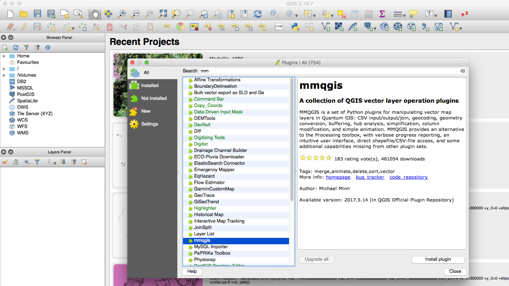
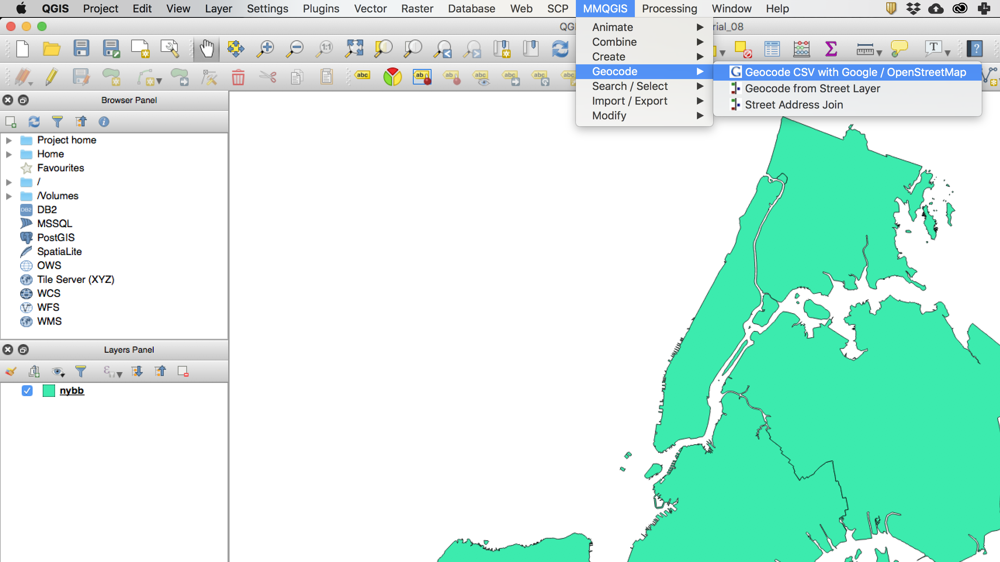
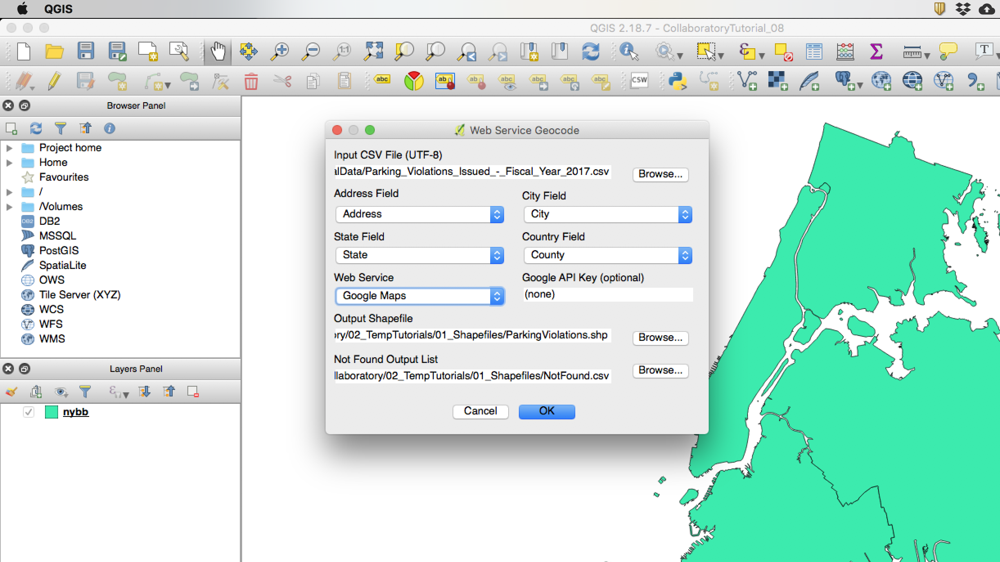

Datasets
For this tutorial we will be using the following datasets:
Boroughs - New York City boroughs. Download from NYC Planning - Open Data. Choose "Borough Boundaries (Clipped to Shoreline)", under "Borough Boundaries & Community Districts".
NYC Parking Violations - Stopping, standing or parking within a marked bicycle lane. Downloaded from NYC OpenData.
What is Geocoding
Geocoding is the process of taking address data and locating it on a map, giving it geographic coordinates. This process,
as simple as it sounds, requires two important things: first, that the addresses be properly formatted, and second,
a detailed street database, containing the names of all streets, as well as the numbering for each street segment.
In the past
geocoding involved taking a street database, such as the LION Single Line Street Base Map,
and using ArcGIS to build a "street locator" file which would act like a dictionary for the street database. Once the "locator" file
was built, ArcGIS would be able to place the addresses on the map based on the street database.
Even though this process is still
in use, for smaller datasets there are simpler alternatives that use QGIS and bypass getting a detailed street database, as well as
building the "street locator" file. In this tutorial, we will use the MMQGIS plugin
for QGIS, which accesses either the Google Maps Geocoding API or the OpenStreetMap/Nominatum API. The big drawback is that both
these APIs have limits on the number of addresses you can geocode. In the case of the Nominatum API, there is a limit of
1 request per second, and in the case of the Google Maps Geocoding API there is a limit of 50 requests per minute and a maximum
of 2,500 requests per day (per API key).
Even though these limits seem not too stringent, once you have a dataset of a few thousand
addresses you will start facing difficulties. Just as an example, take the dataset of parking violations for New York City for
just October 12, 2016, which contains almost 30,000 entries. If you were to use the Google Maps Geocoding API, it would take
over 10 days at a rate of 2,500 requests per day; or if you used the Nominatum API, it would take more than 8 hours. If you need to geocode
a large amount of addresses, the classic way, using ArcGIS, might still be the most efficient way.
Filtering and Downloading Parking Violations
The first step in this tutorial is to select, filter and download the parking violation data. Just like in the working with point data tutorial we will use the NYC OpenData portal to access, filter and download the data. The main dataset we are looking for is called
Parking Violations Issued - Fiscal Year 2017. Once you click there , selectView Datafrom theExplore Datadropdown menu.Ideally, we would use the whole dataset, but because of the geocoding rate limits we will have to filter the dataset and just use violations related to parking on a bike lane for October 12, 2016. I have chosen that day for no particular reason other than it is a weekday.
You probably also want to check out the
DOF Parking Violation Codesfile, which explains all the different codes for parking violations. We will be using code48, which relates toStopping, standing or parking within a marked bicycle lane.Just like on the working with point data tutorial you should create two filters to select just the data we want:
Violation Codeis48Issue Dateis10/12/2016Finally, click on the
Exportbutton at the top right-hand corner of the site and choose theCSV(comma separated values) format. Your file should start downloading then.If you open your .csv file in Excel or Google Sheets you will see that there are about 390 records.
Formatting Address Data
Most geocoding services take addresses in a specific format, something like Address City Zip code County State Country, or a variation of this.
So the first thing we need to do is make sure the dataset we just downloaded has a much address information as possible in the right format. For this we will use either Microsoft Excel or Google Sheets.
First, open your dataset in Excel or Google Sheets
You will notice that the dataset has a column for
Violation County, another forHouse Numberand another forStreet Name. Now, we know that all of these traffic violations occurred in New York City and in New York State, so we can just infer those. However, we still need to combine theHouse Numberand theStreet Nameinto one field and transform theViolation Countydata into something more than just the initials of the counties.Start by adding 4 new columns to your spreadsheet. It doesn't really matter where you add them (I'm adding them right after the
Street Namefield). Name these columnsAddress,City,State, andCounty.Now you need to combine the
House Numbercolumn with theStreet Nameone. This operations is called a concatenation. In the firstAddresscell, write the following formula=X2&" "&Y2. Here,X2andY2refer to the cells where theHouse NumberandStreet Namefields are located. Verify that this formula worked for the first cell and copy it to the rest of the column.Once you've copied the formula for the rest of the cells in the column (and it has worked), you need to select the whole column
Copyit and in the same locationright clickand choosePaste Specialand thenValues. That way you are making sure that the new values are hard-coded and not a formula anymore.For the
CityandStatefields you can just fill them in withNew YorkandNYrespectively.Finally, the process to fill in the
Countyfield is a little more complex:First, if you take a look at the
Violation Countycolumn, you will notice that the way the counties have been coded is not consistent. For example, some of the entries for Brooklyn have been coded asBkand others asK, which stands for "Kings County". To solve this and to make all the county codes consistent we need to build a small table and use theVLOOKUPfunction.In a separate part of your spreadsheet (I'm doing this on the right hand side), create the following table:
These are all the variations of the county names in the table and their corresponding value. Now we need to write the formula stating that when you find the value on the left, in the
Violation Countycolumn you should fill theCountycolumn with the value on the right of the table.In the first cell of the
Countycolumn write the following formula=VLOOKUP(V2,$AW$2:$AX$10,2,FALSE). TheV2refers to where theViolation Countyvalue is, the$AW$2:$AX$10point to the table we created (the$signs make sure that even if the formula is copied it will always point to those fields), the2tells the program to place the second value in the table as the result, and theFALSEmakes sure that only exact matches are used.Once the formula works for the first cell, copy it for the whole column and then, just as we did with the concatenation formula, copy the whole column and paste it again as values only.
Once this is done, delete the table that we added.
Finally, save your file as a
Windows Comma Separated (.csv)file. If you are working with Google Sheets, download your file asComma-separated values.
BK | Kings |
BX | Bronx |
K | Kings |
MN | New York |
NY | New York |
Q | Queens |
QN | Queens |
R | Richmond |
ST | Richmond |
Geocoding
Now, finally, we are ready to go to QGIS and start geocoding.
The first step is to open QGIS and download the MMQGIS plugin. To do this click on
Pluginsand selectManage and Install Plugins...Once the list of plugins has been refreshed, look for the
MMQGISplugin and install it.

Now, open a new map and add the
Boroughsshapefile. This is not necessary but it will help us verify the results of the geocoding.Finally, open the geocoding window by clicking on
MMQGISand selectingGeocodeandGeocode CSV with Google/OpenStreetMap

Now select the file that we prepared as the input, and the appropriate fields for address, county, city, and state.
Leave the web service as
Google Mapsinitially. If this one doesn't work, you can try theOpenStretMaps/Nominatim.And set the
Output Shapefileas well as theNot Found Output List.

Once you are ready click
OK(and cross your fingers...). It will take a while because the plugin takes into account the limits of the API and delays the request accordingly. For our 300 or so requests it should take between 5 and 10 minutes.Once the geocoding process finishes you should have a new layer in your map with your geocoded points. This layer will still have all the data present in the base file. In addition, you should also have on your computer (wherever you placed it) a file with the records that were the service was unable to geocode.
Additional Options
In many cases you might need to geocode more than two or three hundred records. In these cases you should probably use your own Google Maps Geocoding API key. However, remember that even if you use your own key, Google still has a limit of 50 requests per minute and a total of 2,500 requests per day.
To obtain a key you should use a Google account to access the Google Developer Console. Once you sign in, you should go to the Google API Console (link at the bottom of the Google Developer Console page) and create a new project.
Once the project has been created, click on
Enable APIs and Services, search for "geocoding" and once you find it, enable theGoogle Maps Geocoding APIfor this project.Finally, return to your Google API project page and on the left hand panel click on
Credentials. There, click onCreate credentialsand chooseAPI keyfrom the dropdown menu. This is the key you should add to the MMQGIS plugin menu when geocoding.